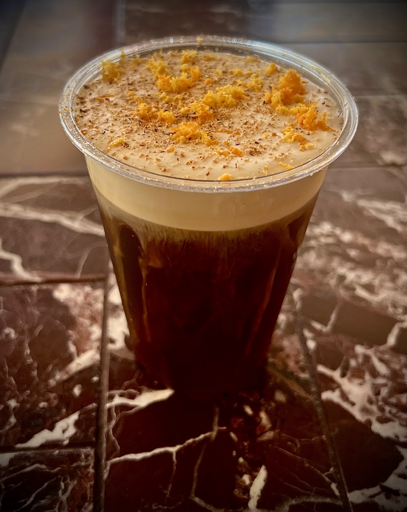
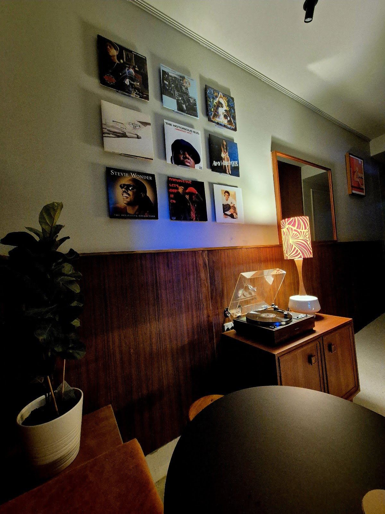
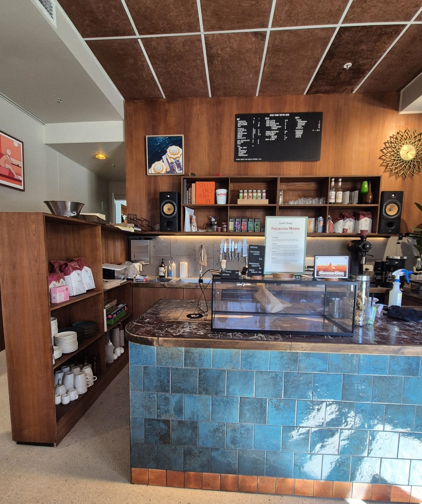

A warm, mid-century corner cafe doing genuinely good coffee — the Mont Blanc cold brew, a proper oat flat white — with baked goods and toasties to match. The kind of spot you walk past, then keep coming back to.
Regulars rave about the coffee here — nutty notes, a touch of caramel, and a few signatures you won't find everywhere. The Mont Blanc cold brew comes up again and again; so does a beautifully poured oat flat white.


Warm timber, rattan and terracotta, a fiddle-leaf in the corner and records on the turntable — it's a mid-century little nook with real soul. Grab a seat inside or pull up a table out front.

"The Raspberry Montblanc was honestly one of the best coffees I've had in a while — the moment the cream blended in, it tasted exactly like a lamington. Rich, creamy, slightly fruity."
"A beautiful slice of design — great ambience, baked goods, and coffee. Oh, that coffee: nutty notes with slight caramel tones make it a treat."
"Super gorgeous cafe with a mid-century cozy vibe. Staff are lovely and helpful — a usually-busy little nook. Will be returning."
"Such a quiet, soulful vibe. The Mont Blanc cold brew was incredibly smooth and absolutely delicious, and there was a great energy to the place."
A short stroll from the North Sydney shops. Open early through the week for the coffee run, and a relaxed weekend pace. Walk-ins welcome.